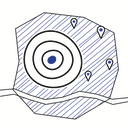

| Numéro | Essence | Lieu | Commune | Abattage | Cause | Cubage |
|---|
Démonstration : grumes fictives, placées dans de vrais parcs de Nantes. Aucune donnée réelle.
Données déclarées par les agents dans Duramen, en lecture seule. Fonds de carte : IGN Géoplateforme. Noms de lieux : © contributeurs OpenStreetMap.